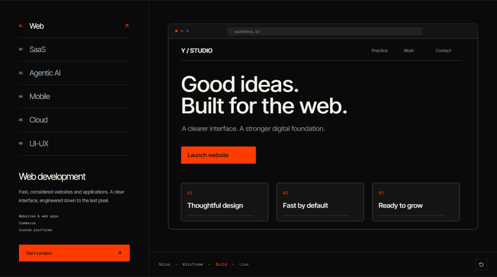

Service stories.
Work, in detail.
Actual browser captures of the six service narratives and the editorial project track. The mid-sequence images were taken about halfway through the 5.6-second stories.
Read the implementation and verification report ↗